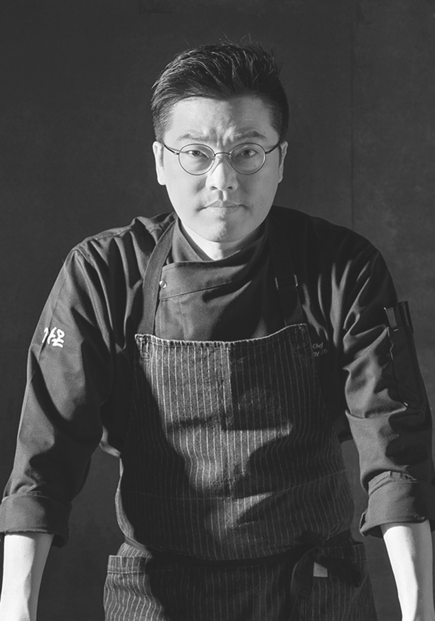

셰프로서 가장 중요한 것은 재료에 대한 책임감입니다.
가온 총괄 셰프 김병진
셰프로써 가장 중요하게 생각하는 것은 재료에 대한 책임감입니다.
좋은 식재료를 알아볼 수 있는 안목을 기르고 원재료 본연의 맛이 살아있는 요리를 선보이기 위해 끊임없이 공부하고 연마합니다.
한국인에게만 익숙했던 한식, 전 세계의 입맛을 사로잡기 위해 나날이 새로이 발전할 것입니다.
더 많은 사람들이 한식을 이해하고, 한식에 대해 이야기 하는 날이 오기를 기대합니다.